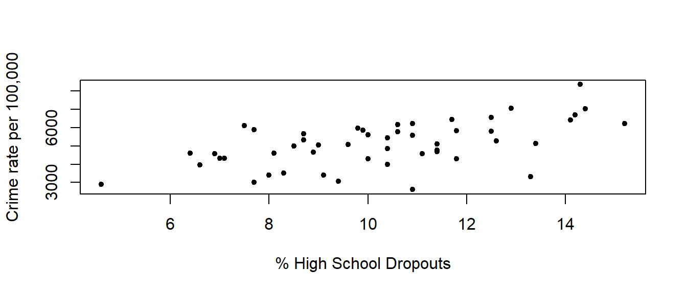
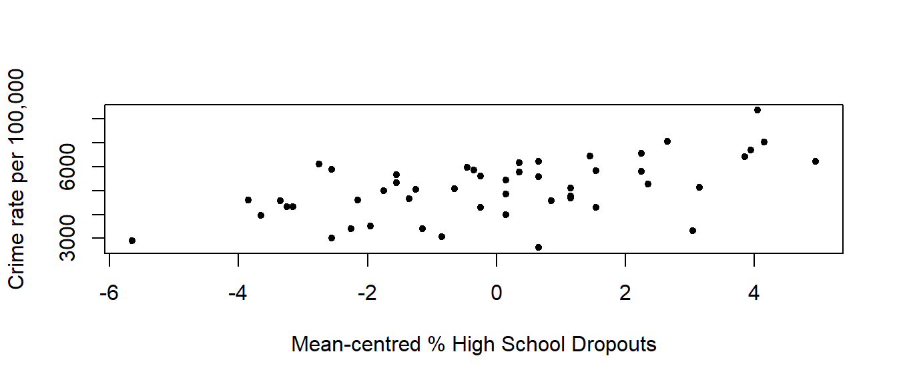
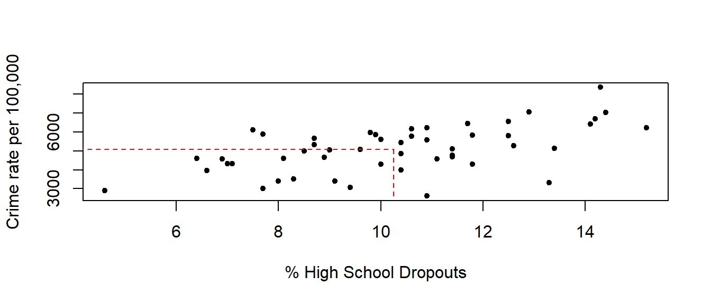

4 (optional) Reparameterising the model
In Chapter 3 of the lecture notes, we will learn that reparameterising a linear model can make some of the calculations simpler. Today let's try to reparameterise the simple linear regression model (1.1). Suppose we go from
\[Y_i = \alpha + \beta x_i + \epsilon_i\]
\[\Big\downarrow\]
\[Y_i = \alpha + \beta (x_i - \bar{x}) + \epsilon_i\]
That is, we subtract the average % dropout rate from each of the observed rates for each state, thus mean centering the % dropout rate. However, as we will see, this changes our interpretation of the model results.
QUESTION 2
- Write down the reparameterised model using vector-matrix notation:
\[\underbrace{\begin{bmatrix} & & \\ & & \\ & & \\ & & \\ & & \\ \end{bmatrix}}_{\mathbf{Y}} = \underbrace{\begin{bmatrix} & & & & & & \\ & & & & & & \\ & & & & & & \\ & & & & & & \\ & & & & & & \\ \end{bmatrix}}_{\mathbf{X}} \underbrace{\begin{bmatrix} & & \\ & & \\ & & \\ & & \\ \end{bmatrix}}_{\boldsymbol\beta} + \underbrace{\begin{bmatrix} & & \\ & & \\ & & \\ & & \\ & & \\ \end{bmatrix}}_{\boldsymbol\epsilon} \]
- Figures below display scatterplots of crime rate against % dropout, and crime rate against mean-centred % dropout. What does this tell us about the relationship between crime rate and the mean-centred % dropout in comparison with the % dropout?

Figure 4.1: Top: crime rate vs. % dropout. Bottom: crime rate vs. mean-centred % dropout.
Figure 4.2: Top: crime rate vs. % dropout. Bottom: crime rate vs. mean-centred % dropout.
We can fit the reparameterised model using the following commands:
drop.centred <- crime$Dropout - mean(crime$Dropout)
model2 <- lm(Y ~ drop.centred)and obtain the model summary using:
summary(model2)Comparing the model summary from model1 and model2, we can see that all of the statistics are the same, except for those for the intercept term, \(\alpha\). That is because, if we look again at the least squares estimates of the parameters (without reparameterisation)
\[\hat{\boldsymbol\beta} = \begin{bmatrix} \hat{\alpha} \\[0.5em] \hat{\beta} \end{bmatrix} = \begin{bmatrix} \bar{y} - \hat{\beta} \bar{x} \\[0.5em] \frac{S_{xy}}{S_{xx}} \end{bmatrix},\]
\(\bar{x} = \sum_{i=1}^n x_i/n\) denoted the mean % dropout. However, with the reparameterisation, \(\bar{x}\), in this case, say \(\bar{x}_c = \sum_{i=1}^n \left(x_i - \bar{x}\right)/n = 0\), and hence the estimate of the intercept term, \(\hat{\alpha} = \bar{y}\), i.e. the average US crime rate (per 100, 000 people).
The intercept for the reparameterised model now takes on more meaning. It is the average crime rate when the predictor(s) are zero. For example, in model2 the intercept \(\hat{\alpha} = 5085.2\), that is, the average crime rate, when the mean-centred % dropout is 0, which is equivalent to taking the average % dropout (i.e. \(\bar{x} = 10.252\)) in model1. This is shown in figures below which display the fitted regression lines from both models, as well as the crime rate given the average % of high school dropouts.

Figure 4.3: Top: crime rate vs. % dropout with fitted line. Bottom: crime rate vs. mean-centred % dropout with fitted line. The dashed lines denote the crime rate given the average % of high school dropouts.
For model1 our interpretation was that for every 1% increase in the % of high school dropouts, the expected crime rate (per 100, 000) increases by 281.8. For model2 our interpretation gives the crime rate related to some deviation from the mean % of high school dropouts. For example, if the % dropout rate is 12%, then from model1 we obtain
\[\text{Crime} = 2196.5 + 281.8 \cdot 12 = 5578\]
For model2 a 12% dropout rate relates to being \(12 - \bar{x} = 1.748%\) higher than the average % dropout rate, and hence we get
\[\text{Crime} = 5085.2 + 281.8 \cdot 1.748 = 5578\]
4.1 Multiple linear regression
We will now use the crime data to fit a multiple linear regression model, such that
\[Y_i = \alpha + \beta (x_{1i} - \bar{x}_{1.}) + \gamma (x_{2i} - \bar{x}_{2.}) + \epsilon_i, \quad \epsilon_i \sim N(0, \sigma^2), \quad i = 1,\ldots,n,\]
where the predictors, \(x_{1i}\) and \(x_{2i}\), are mean centred.
QUESTION 2
- Write down the multiple linear regression model using vector-matrix notation:
\[\underbrace{\begin{bmatrix} & & \\ & & \\ & & \\ & & \\ & & \\ \end{bmatrix}}_{\mathbf{Y}} = \underbrace{\begin{bmatrix} & & & & & & & & & \\ & & & & & & & & & \\ & & & & & & & & & \\ & & & & & & & & & \\ & & & & & & & & & \\ \end{bmatrix}}_{\mathbf{X}} \underbrace{\begin{bmatrix} & & \\ & & \\ & & \\ & & \\ \end{bmatrix}}_{\boldsymbol\beta} + \underbrace{\begin{bmatrix} & & \\ & & \\ & & \\ & & \\ & & \\ \end{bmatrix}}_{\boldsymbol\epsilon} \]
\[\begin{bmatrix} Y_1 \\ Y_2 \\ \vdots \\ Y_n \end{bmatrix} = \begin{bmatrix} 1 & x_{11}-\bar{x}_{1.} & x_{21}-\bar{x}_{2.} \\ 1 & x_{12}-\bar{x}_{1.} & x_{22}-\bar{x}_{2.} \\ \vdots & \vdots & \vdots \\ 1 & x_{1n}-\bar{x}_{1.} & x_{2n}-\bar{x}_{2.} \\ \end{bmatrix} \begin{bmatrix} \alpha \\ \beta \\ \gamma \end{bmatrix} + \begin{bmatrix} \epsilon_1 \\ \epsilon_2 \\ \vdots \\ \epsilon_n \end{bmatrix}\]
- Reparameterise the multiple linear regression built in Question 1(e) and compare the least square estimates of parameters.
Recap that our original model is given by
model1 <- lm(Crime ~ Dropout + Police + Prison, data = crime)Now we fit the reparameterised model by using:
police.centred <- crime$Police - mean(crime$Police)
prison.centred <- crime$Prison - mean(crime$Prison)
model2 <- lm(Crime ~ drop.centred + police.centred + prison.centred, data = crime)Apart from the intercept, the parameters remain the same.
coef(model1)## (Intercept) Dropout Police Prison
## 1513.317509 148.343452 4.782505 2.794514coef(model2)## (Intercept) drop.centred police.centred prison.centred
## 5085.160000 148.343452 4.782505 2.794514